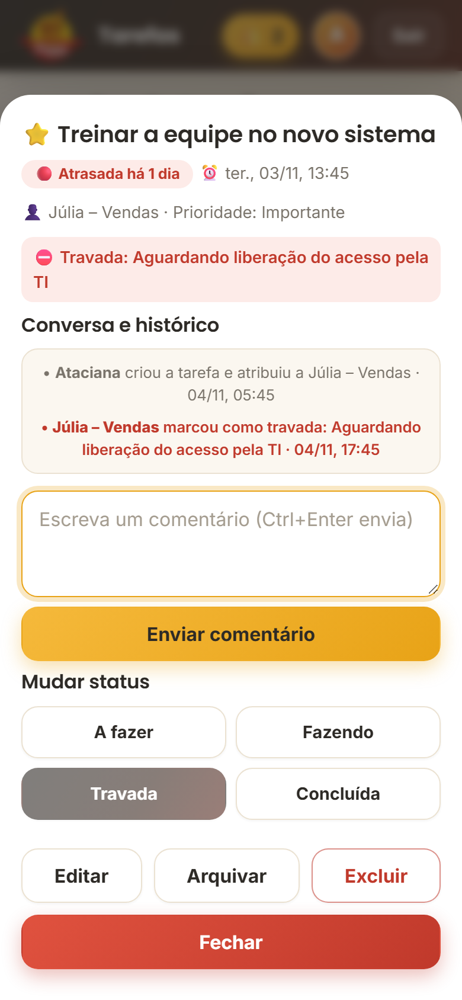
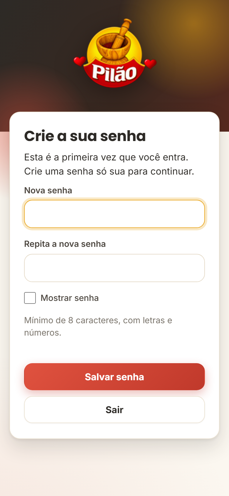

Pilão Tarefas
Nenhuma demanda esquecida.
Uma apresentação rápida, de uns 5 minutos, feita para ver no celular. Toque em Continuar para avançar.
Você já passou por isso?
Você pede um relatório para amanhã, 10h. Aí:
- A impressora falhaQuem ia fazer percebe, mas você já foi embora.
- Ninguém lembraA tarefa não está escrita em lugar nenhum.
- A reunião começa sem o relatórioSó aí vem a pergunta: "cadê?".
Não é falta de vontade. É falta de ver.
Agora, com o Pilão Tarefas
A mesma história, só que com tudo à vista:
- Tarefa criada com prazo e responsávelA Ana recebe o aviso na hora.
- A Ana trava e explica o motivo"Impressora sem toner." Fica em vermelho no seu painel.
- Você resolve e ela concluiTudo registrado, antes das 10h.
Criar leva meio minuto
Título, responsável e prazo em botões (Hoje, Amanhã, Em 2 dias…) ou no calendário. Se quiser, uma lista de "como fica pronto".

Tudo num quadro
Quatro colunas: A fazer, Fazendo, Travada e Concluída. O prazo avisa sozinho: 🟢 no prazo, 🟡 vence em menos de 24h, 🔴 atrasada.

Travou? Fica à vista
Quem trava uma tarefa precisa escrever o motivo. Ela vira vermelha no seu painel e você recebe o aviso. Nada se perde no meio do caminho.

Teste rápido
Uma funcionária não consegue avançar porque o sistema caiu. O que ela deve fazer?
Cada um vê só o que é seu
O "Meu dia" mostra o que está atrasado, o que vence hoje e quantas tarefas a pessoa está fazendo (no máximo 3, para terminar uma antes de começar outra). A tarefa só conclui com o checklist todo marcado. No celular, é só segurar e arrastar o cartão.

O aviso chega no celular
Tarefa nova, comentário, tarefa travada ou prazo vencendo: o aviso chega por e-mail (o Gmail já avisa no celular) e pelo sininho dentro do app. O selo NOVO só some quando a pessoa abre a tarefa.

Dois papéis, regras claras
👑 Dono
- Cria e acompanha tudo
- Cadastra a equipe
- Resolve as travadas
👤 Equipe
- Vê só as suas tarefas
- Muda o status e comenta
- Trava com motivo
Ninguém vê a senha de ninguém. As regras valem no servidor, não só na tela.
Do link ao uso em 2 minutos
- O dono cadastra a pessoa e o app gera uma senha provisória, com mensagem pronta para o WhatsApp.
- A pessoa abre o link e entra.
- Cria a própria senha. Nem o dono vê.
- Põe o app na tela inicial do celular, e ele abre com um toque.

O que você precisa saber
- R$ 0de mensalidade
- 1 a 2 spor ação (normal nesse tipo de app)
- 100e-mails por dia, numa conta Google comum
- ~20pessoas: feito para equipes pequenas
Os dados ficam numa planilha do Google na conta da empresa. Você pode abrir e fazer cópia quando quiser.
Agora é a sua vez
Experimente o app de verdade, com uma equipe de mentira. Crie tarefas, mude de coluna e trave uma. Nada do que você fizer é guardado.